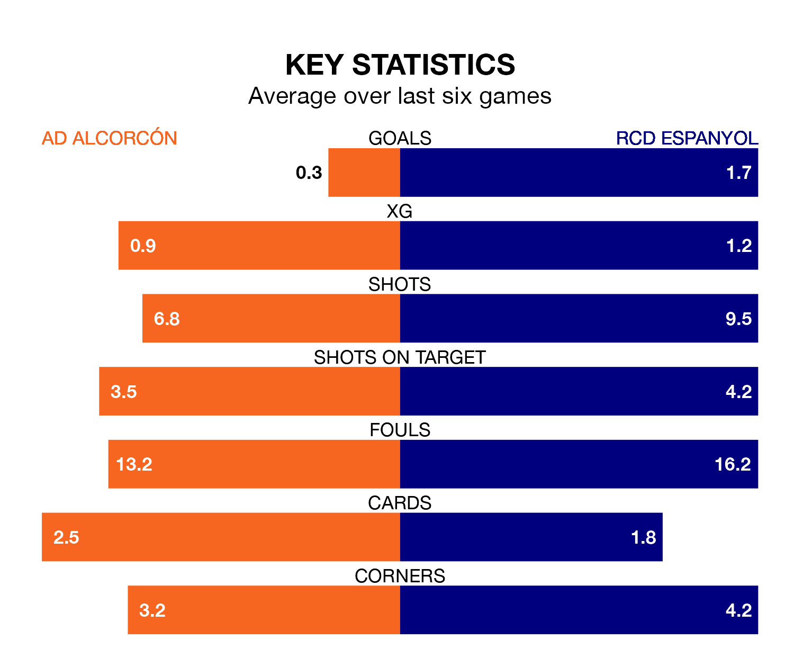

Relegation candidates AD Alcorcón face a challenge against high-flying RCD Espanyol at the Estadio Santo Domingo on Sunday.
AD Alcorcón are 20th in the Segunda División table, and have picked up seven wins and eight draws in their 29 games to date.
Espanyol, meanwhile, are third in the standings with 48 points, having won 13 and drawn nine, and are two points behind table-toppers Leganés.
With 46 goals in 29 games so far this season, Espanyol are the league's joint-highest scorers with 1.6 goals per game. And they are conceding at an average rate, letting in 33 goals at a rate of 1.1 per game.
Alcorcón, meanwhile, are below average scorers, with 0.8 goals per game, compared to a league average of 1.1. They have conceded 1.4 goals per game.
In Martin Braithwaite, the away side have the league's sharpest shooter so far this season. He has notched 17 goals in 27 appearances.
His goal rate of one every 139 minutes is quicker than that of Dyego Sousa, the hosts' top scorer with a goal every 172 minutes, and a total of five goals in 16 games.
Alcorcón are in disappointing form in the Segunda División, with one win and two draws from their last six games.
With three wins and a draw over that period, Espanyol's form is better – they have taken 10 points from 18, compared to Alcorcón's five.
Alcorcón's last match was on Monday, a 3-0 loss against Elche CF.
Espanyol drew 0-0 with SD Huesca last time out, on March 2.
Sunday's match will be refereed by Jon Ander González Esteban, who has taken charge of 15 Segunda División games so far this season, issuing four red cards and booking 70 players. He has awarded three penalties.
The last Espanyol game González Esteban refereed was the 3-2 loss away at CD Eldense on January 28. He is yet to oversee a match featuring Alcorcón this season.
Updated: 09:34 (UTC), 08/03/24